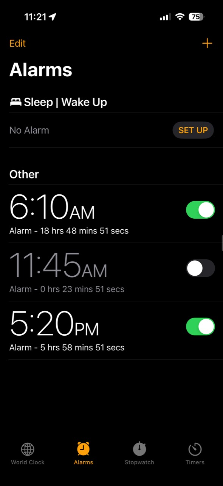

Sleep Left
0.1.1 · Rootless · Free · MIT
See your sleep time remaining, right in Clock.
Live countdowns beneath your alarm labels. See the hours, minutes and seconds at a glance.
Appears automatically in Clock. No configuration needed.

Compatibility
- iPhone 14 Pro: iOS 17.0 (21A329)
- iPhone 11 Pro Max: iOS 18.3.2 (22D82)
- iPhone SE (2nd generation): iOS 26.0.1 (23A355)
Owner reports Sleep Left 0.1.1 working on iPhone SE (2nd generation), iOS 26.0.1 (23A355). Earlier iOS 17.0 and 18.3.2 functional checks used the alpha. Other configurations remain unverified.
Sleep/Wake Up alarms are not included. Disabled alarms show a countdown preview and remain off. Countdown units are English.
Other configurations, including RootHide, are unverified. Other iOS 26 versions are not admitted. Use one alarm-countdown tweak at a time.
Credits
An independent implementation by 0chium, inspired by AlarmTime by P2KDev. Free and MIT licensed.
Download
Package details
Package: com.ochium.sleepleft · Maintainer: 0chium
SHA256 548d79d5cd5592a54aeb9b1e9c2416dc1e7e2e78049d0f2e7c2080bbaad19cbb